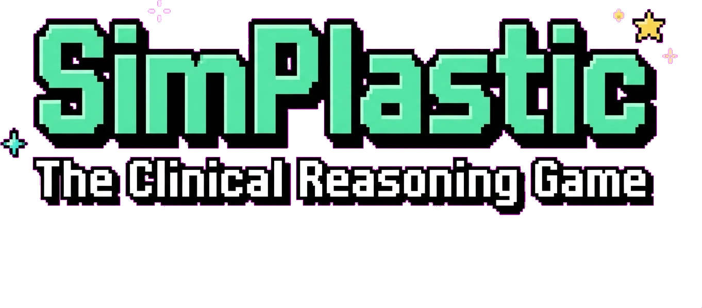
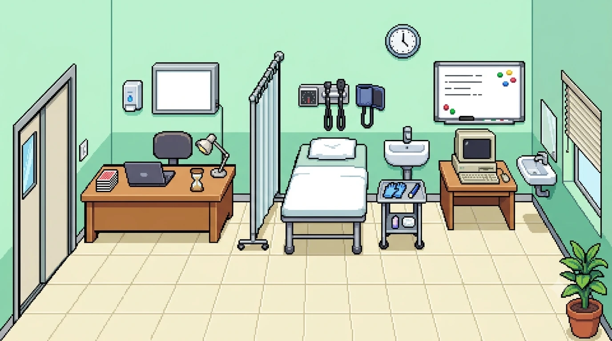
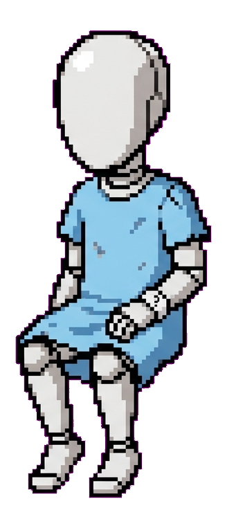
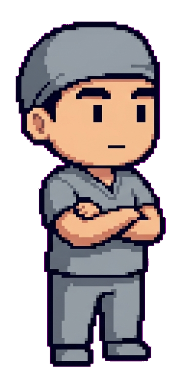

Plastic Surgery · 34 การ์ด · 4–6 ผู้เล่น · เกมฝึก clinical reasoning แบบ multiplayer


Patient
Observerเกมนี้เล่นได้ฟรีบนเว็บ สร้างห้องแล้วส่งรหัส 4 ตัวอักษรให้เพื่อนอีก 3–5 คนเข้าร่วม (ต้องมีอย่างน้อย 4 คน) เปิดครั้งแรกอาจรอเซิร์ฟเวอร์ตื่นราว 30 วินาที
▶ เล่นเกม